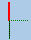

All parameters and functions that are required to create and set up the tools are displayed in the tool list.
Each tool is uniquely identified by the tool identifier and the replacement tool number.
For the tool display, i.e. when displaying the cutting edge positions, the machine coordinate system is taken into account.
Tool parameters
Column heading | Meaning |
|---|
Location
BS
 * *
 * *
* If activated in magazine selection | Magazine/location number Magazine location numbers
The magazine number is specified first, followed by the location number in the magazine.
If there is only one magazine, only the location number is displayed. Load position in the load magazine
The following icons can also be displayed for other magazine types (e.g. for a chain): |
Type | Tool type Specific tool offset data is displayed depending on the tool type (represented as an icon). The icon identifies the position of the tool; this was selected when the tool was created. |
 | You have the option of changing the tool position or the tool type using the <SELECT> key. |
Tool name | The tool is identified by the name and the replacement tool number. You can enter the name as text or number. Note: The maximum length of tool names is 31 ASCII characters. The number of characters is reduced for Asian characters or Unicode characters. The following special characters are not permitted: | # ". |
ST | Replacement tool number (for replacement tool strategy). |
D | Cutting edge number |
Length X, length Z | Tool length Geometry data length X and length Z |
Radius | Tool radius |
∅ | Tool diameter |
Width/ Tip width/ Tip angle /
Pitch Drilling radius | Cutting edge for Type 150 - side milling cutter and Type 151 - saw Tip width for Type 520 - plunge cutter and Type 530 - cut-off tool Tip angle for Type 200 – twist drill and Type 220 – centering tool and Type 230 – countersink Pitch for Type 240 - tap Drilling radius for Type 560 - rotary drill. Holder angle and cutting tip angle are fixed. |
|  | Cutting edge graphic The cutting edge graphic shows the positioning defined by the holder angle, cut direction and cutting tip angle.
Holder angle for type 500 - rougher and type 510 - finisher as well as for type 505 - Y rougher and type 515 - Y finisher.
The reference direction for the holder angle specifies the cut direction. In addition to the holder angle, the cutting tip angle is also specified. |
N | Number of teeth for Type 110 - ballhead mill for cylindrical die-sinking cutter, Type 111 - ballhead mill for tapered die-sinking cutter, Type 120 - end mill, Type 121 - end mill with corner rounding, Type 130 - angle head cutter, Type 140 - facing tool, Type 150 - side milling cutter, Type 155 - bevel cutter, Type 156 - bevel cutter with corner rounding, Type 157 - tapered die-sinking cutter and type 220 - centering tool. |
Tip length | Tip length of a cutting tool or grooving cutter The tip length is required for displaying the tools during the simulation of the program processing. |
| | Direction of spindle rotation The direction of the spindle’s rotation is relative to the tool spindle for powered tools (drilling and milling machines) and to the main or counterspindle for turning tools. If you are using a drilling or milling machine for "Drilling centric" or "Thread centric", the specified direction of rotation is relative to the cutting direction of the tool. The main spindle then rotates to match the tool. Spindle is not switched on  CW spindle rotation CW spindle rotation
 CCW spindle rotation CCW spindle rotation
|
 | Coolants 1 and 2 (e.g. internal and external cooling) can be activated/deactivated. The coolant infeed at the machine does not necessarily have to be set up. |
M1 - M4 | Other tool-specific functions such as additional coolant infeed, monitoring functions for speed, tool breakage, etc. |
Further parameters
If you have set up unique cutting edge numbers, these are displayed in the first column.
Column heading | Meaning |
|---|
D no. | Unique cutting edge number |
SN | Cutting edge number |
SC  | Setup offsets Display of the existing setup offsets |
You use the configuration file to specify the selection of parameters in the list.
 | Software option In order to be able to manage the parameter spindle direction of rotation, coolant and tool-specific functions (M1-M4), you require the "ShopMill/ShopTurn" option. |
 | Machine manufacturer Please observe the information provided by the machine manufacturer. |
Tool change / block search in the ShopTurn program step
At the start of the program, the programmed tool is always loaded in the first ShopTurn program step, even if it is already active.
The corresponding tool-specific M functions are also output.
In the further program sequence, a tool change is only carried out if this is required, i.e. another tool is active.
The corresponding tool-specific M functions are only output when the tool has been changed.
If the desired tool is already active, the M functions are not output again.
After a block search, the tool-specific Machine functions are always output, even if a different coolant has been programmed since, e.g. via G code or via the "Machine functions" window.
More information
More information on configuring and setting up the tool list is provided in the Tool Management Function Manual.
Icons in the tool list
Icon/ Marking | | Meaning |
|---|
Tool type |
Red "X" |  | The tool is disabled. |
Yellow triangle pointing downward |  | The prewarning limit has been reached. |
Yellow triangle pointing upward |  | The tool is in a special state. Place the cursor on the marked tool. A tool tip will provide a brief description. |
Green border
|  | The tool is preselected. |
Magazine/location number |
Green double arrow |  | The magazine location is positioned at the change position. |
Gray double arrow |  | The magazine location is positioned at the loading position. |
Red "X" | | The magazine location is disabled. |
| | Machine manufacturer Please observe the information provided by the machine manufacturer. |
Procedure
 | 1. | Select the "Parameter" operating area. |
 | 2. | Press the "Tool list" softkey. The "Tool List" window opens. |